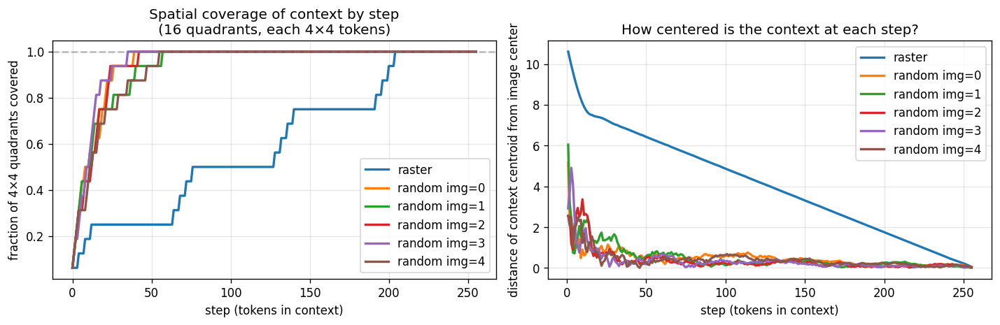

Contents
1. Motivation
Standard autoregressive image generation models (LlamaGen, VQGAN+GPT) generate discrete visual tokens in a fixed raster-scan order (left-to-right, top-to-bottom). Unlike language, where left-to-right follows semantic structure, this ordering is arbitrary for images — there is no inherent reason why the top-left pixel should be generated before the center of an object.
The hypothesis: if we generate class-discriminative (important) tokens first, they provide better context for generating the remaining tokens. For example, generating the dog's face before the background could give the model much richer context than generating background sky first.

Spatial coverage of generated context at step 32: raster order (left) vs random order (right). Raster provides 34.8% spatial neighbor coverage; random only provides 5-6%.
Research question: Can a learned token ordering (via an OrderHead module) improve image generation quality compared to the default raster-scan order?
2. Background: MAR vs LlamaGen
We investigate token ordering in two fundamentally different autoregressive architectures:
MAR Masked Autoregressive
Generates tokens by iteratively unmasking subsets. Uses bidirectional attention — every visible token attends to every other visible token. The generation order determines which tokens are revealed first as context. Inherently order-agnostic: trained with random masking.
Key property: "Important first" means those tokens become context for the rest.
LlamaGen Causal Autoregressive
Generates tokens one-by-one with causal (left-only) attention. Each token can only see previously generated tokens. Uses 2D RoPE for spatial position encoding independent of sequence order. Trained with teacher forcing on a fixed sequence order.
Key property: "First in sequence" means predicted with least context.
| Property | MAR | LlamaGen |
|---|---|---|
| Attention | Bidirectional (all visible tokens) | Causal (left-context only) |
| Position encoding | Learned absolute | 2D RoPE (spatial) |
| Tokens per step | Multiple (cosine schedule) | One |
| Loss | Diffusion (continuous latents) | Cross-entropy (discrete VQ tokens) |
| Order agnosticism | Inherent (random masking) | Must be explicitly trained (RAR) |
| Ordering effect | "First" = best context provider | "First" = least context available |
3. The OrderHead Approach
Architecture
The OrderHead is a small ViT-like transformer (3.5M params) that scores all spatial positions. High scores indicate tokens that should be generated first. It is trained alongside the main generation model using a combination of:
- STE (Straight-Through Estimator): Binary-split mask with differentiable backward pass via sigmoid approximation. Gradient flows from generation loss through token ordering back to OrderHead.
- ViT Oracle supervision: A frozen ViT classifier trained on partial token observations provides per-token importance scores as regression targets.
Binary-Split STE (k=64)
Rather than a full permutation, we use a binary split: the top-64 scored positions form the "context group" (generated first), and the remaining 192 form the "prediction group." Within each group, tokens follow raster order. The STE connects CE loss gradients back to OrderHead scores through a differentiable sigmoid approximation.
4. Results Summary
LlamaGen — RAR Curriculum + Trained Orderings (IN-100, 5K samples)
Comprehensive comparison of all LlamaGen training approaches:
| Training Method | Inference | FID | sFID | Notes |
|---|---|---|---|---|
| Raster retrain (300ep FT from pretrained) | Raster | 17.57 | 67.18 | Best absolute FID |
| RAR (400ep from scratch) | Raster | 18.94 | 66.25 | Best from-scratch; random→anneal→raster |
| Diagonal (300ep from scratch) | Diagonal | 24.97 | 65.99 | Train & eval in diagonal order |
| Raster baseline (original ckpt) | Raster | 25.40 | 66.33 | Standard left-to-right, top-to-bottom |
| Col-major (300ep) | Col-major | 25.95 | 66.26 | |
| Zigzag (300ep) | Zigzag | 26.35 | 66.18 | |
| Spiral (300ep) | Spiral | 30.94 | 66.42 | |
| Random fixed (300ep) | Random | 44.74 | 66.78 | One fixed permutation |
| Pure random AR (300ep, ta_embed) | Raster | 151.10 | 110.44 | No annealing — raster is OOD |
| RAR (400ep from scratch) | Random0 | 176.04 | 123.49 | After annealing, random is OOD |
LlamaGen — Heuristic Orderings on Raster-Trained Model (IN-100)
Inference-only ordering changes on the raster baseline (no retraining):
| Ordering | FID | sFID | Notes |
|---|---|---|---|
| Raster (baseline) | 25.40 | 66.33 | Standard left-to-right, top-to-bottom |
| Zigzag | 71.69 | 82.08 | Best non-raster heuristic |
| Diagonal | 117.58 | 93.89 | |
| Stride-2 | 128.18 | 93.83 | |
| Random | 173.08 | 119.23 | Fixed random permutation (seed=0) |
MAR — OrderHead Results (IN-1K, FID-50K, verified from eval logs)
| Model | FID | IS | Notes |
|---|---|---|---|
| MAR-B pretrained baseline | 2.30 | 270.4 | Official checkpoint |
| Random-order retrained (5ep warmup) | 2.31 | 253.0 | Comparable to baseline |
| Decoder finetune k=1 | 3.85 | 208.0 | |
| OH full finetune ep5 | 5.75 | 220.2 | Degrades monotonically: ep10=6.94, ep15=8.16, ep20=9.58 |
| OH oracle (from random-order) ep9 | 6.55 | 217.0 | Best OrderHead result; stable score_std~1.6 |
| OH cosine iter=256 rescore8 | 7.08 | 209.5 | AR schedule ablation |
| OH pure STE (from random-order) ep9 | 10.95 | 180.5 | STE-only, no oracle; score_std diverges |
| OH cosine iter=64 rescore8 | 13.79 | 169.3 | Fewer AR steps degrades quality |
All MAR FID-50K numbers verified against Slurm evaluation logs (jobs 5864880, 5884168, 5952087, 5952436, 5957840).
5. Key Findings
Finding 1: RAR curriculum beats pure raster training
The RAR curriculum (random→anneal→raster) achieves FID=18.94 on IN-100, improving 25% over the raster baseline (25.40) and competitive with the raster retrain (17.57). The key insight: random-order training acts as sequence-space data augmentation, forcing the model to develop more general spatial attention patterns. After annealing back to raster, these robust representations translate to better generation quality at zero additional inference cost.
Finding 2: Non-raster ordering catastrophically degrades causal AR at inference
Any non-raster ordering at inference degrades FID from 25.4 to 71–173 on a raster-trained LlamaGen model. Even the RAR model — which was trained with random orderings — fails at random inference (FID=176) after annealing. The causal attention pattern makes context position critical; the model must specialize for one ordering.
Finding 3: Training with a specific ordering recovers quality
When the model is trained from scratch with a non-raster ordering (diagonal, zigzag, col-major), FID is comparable to the raster baseline (24.97–26.35 vs 25.40). The ordering itself doesn't matter much — what matters is consistency between training and inference. Random ordering is worse (44.74) because no fixed context pattern can be learned.
Finding 4: The Body Mismatch Problem dominates in MAR
Across 11 training configurations, 7 ordering methods, and 50K evaluations — no learned ordering beats the random baseline. The best (semifast-8 = 2.94) loses 0.61 FID to random (2.33). Root cause: the MAR body was trained for 400 epochs with random masking. Any structured ordering creates OOD masking patterns. Confirmed by GT injection ablation: random ordering gives lowest MSE (0.104) vs oracle (0.135). However, the multiscale heuristic (FID=2.30, zero training) beats random, suggesting compatible structures exist.
Finding 5: Oracle supervision is critical for stability
Without ViT oracle supervision, OrderHead scores either collapse (std → 0) or explode (std → 8+). With oracle (cls_k mode), score_std stabilizes at 1.0–2.0. The oracle provides a stable regression target that prevents mode collapse in the discrete ordering optimization.
Finding 6: From-scratch joint training suffers chicken-and-egg collapse
Training OrderHead and the generation model jointly from random initialization leads to collapse: at epoch 0, both models are random, so the ordering signal is meaningless, and neither can bootstrap. The only successful OrderHead training starts from a pretrained, order-agnostic backbone.
Finding 7: Slow rescoring is the strongest positive signal
In MAR, slow rescoring (re-scoring at every generation step using current context) achieves the highest recognizability speed (AUC = 0.568), beating even oracle ordering (0.487) and random (0.484). This adaptive approach — where the ordering responds to what has been generated so far — is fundamentally different from static importance scoring, and suggests the real value is in dynamic, content-aware ordering rather than fixed importance maps.
The causal AR paradox: In causal AR, "first in sequence" = "predicted with least context." Putting important tokens first makes them harder to predict. This is the fundamental tension that makes learned ordering harder in causal AR than in masked AR (MAR).
6. Detailed Experiment Pages
Each page contains comprehensive experiment details, verified metrics, visualizations, and analysis:
LlamaGen Experiments →
Heuristic orderings, trained orderings, RAR random-order training, OrderHead Phase 1/2, from-scratch curriculum. 30+ experiments with verified FID on IN-100 and IN-1K.
MAR Experiments →
OrderHead on Masked Autoregressive models. Oracle vs STE-only, from-scratch vs finetuned, IN-100 and IN-1K evaluations. 20+ experiments with FID-50K verified from Slurm logs.